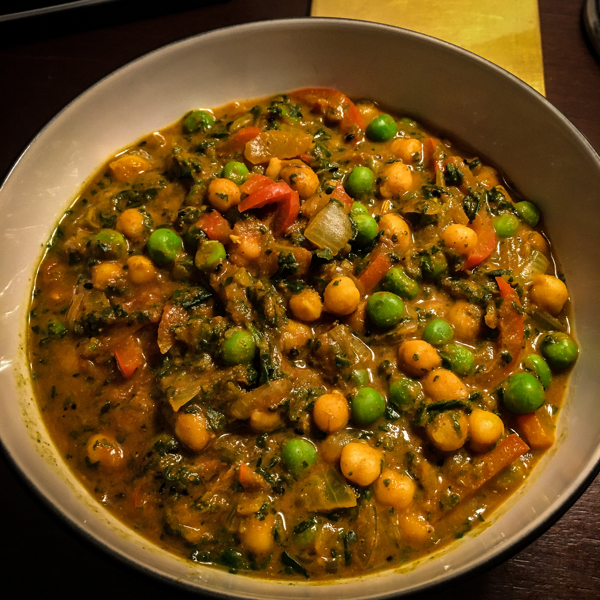
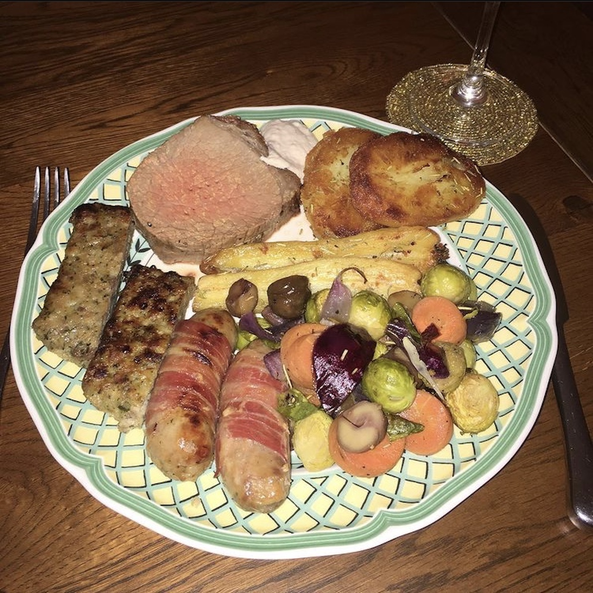
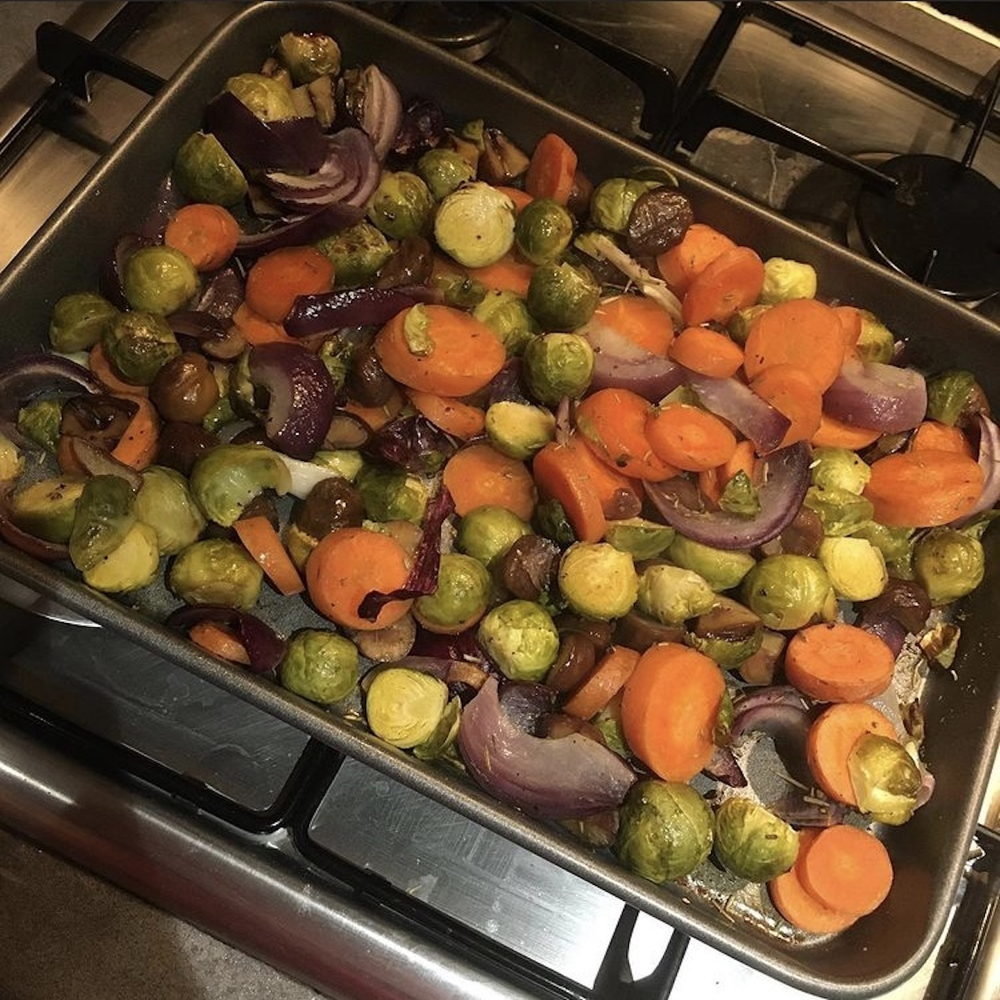
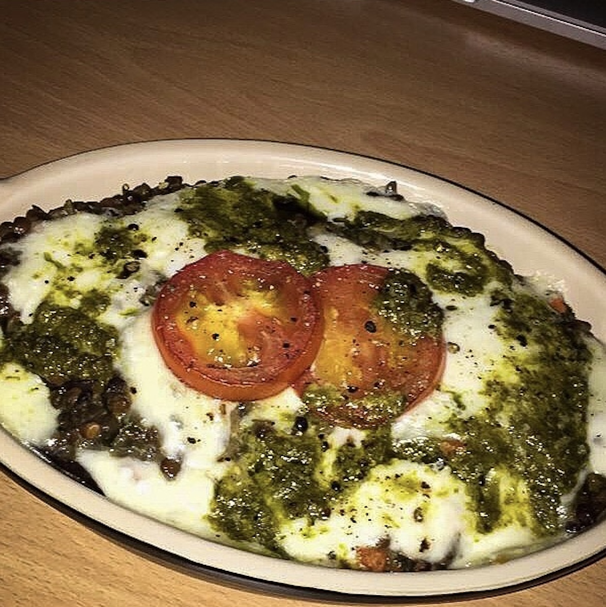

Prawn Tacos Prawn Tacos |
 Beef Chilli Beef Chilli |
 Chilli Tacos Chilli Tacos |
 Paella Paella |
 Chicken Tikka Chicken Tikka |
 Chicken Tikka 2 Chicken Tikka 2 |
 Garam Masala Sauce Garam Masala Sauce |
Chickpea Dahl |
 Prawn Tacos 2 Prawn Tacos 2 |
 Paella 2 Paella 2 |
 Seared Salmon Seared Salmon |
 Thai Green Curry Thai Green Curry |
 Carne Asada Carne Asada |
 Chicken & Corn Chicken & Corn |
 Seared Seabass Seared Seabass |
 Pizza Pizza |
 Chicken Tikka Chicken Tikka |
 Chinese Salmon Chinese Salmon |
 Thai Red Curry Thai Red Curry |
 Aloo Gobi Aloo Gobi |
 Salmon En Croute Salmon En Croute |
 Salmon En Croute (Pre-Cook) Salmon En Croute (Pre-Cook) |
 Salmon & Salmon Fritters Salmon & Salmon Fritters |
 Tuna Steak Tuna Steak |
 Creamed Beef & Mushrooms Creamed Beef & Mushrooms |
 Prawn & Tuna Tacos Prawn & Tuna Tacos |
 Strange Mix Strange Mix |
 Seafood Linguine Seafood Linguine |
 Pizza 2 Pizza 2 |
 Cod Loin & Dahl Cod Loin & Dahl |
 Scrambled Egg On Rye Scrambled Egg On Rye |
 Prawn Risotto Prawn Risotto |
 Seafood Selection Seafood Selection |
Xmas 2019 |  Xmas 2019 2 Xmas 2019 2 |
 Xmas 2019 3 Xmas 2019 3 |
| Xmas 2019 4 |  Xmas 2019 5 (Pre-Cook) Xmas 2019 5 (Pre-Cook) |
 Apple & Walnut Pie Apple & Walnut Pie |
 Apple & Walnut Pie 2 Apple & Walnut Pie 2 |
 Seafood Paella Seafood Paella |
 Butter Bean Stew Butter Bean Stew |
 Lamb & Mint Kebabs Lamb & Mint Kebabs |
 Grilled Vegetables Grilled Vegetables |
 Pizza 3 Pizza 3 |
 Pizza 3 (Pre-Cook) Pizza 3 (Pre-Cook) |
 Lamb & Halloumi Burger Lamb & Halloumi Burger |
 Roast Chicken Dinner Roast Chicken Dinner |
 Haricot Bean Stew Haricot Bean Stew |
 Spelt & Barley 'Risotto' Spelt & Barley 'Risotto' |
M&S Malaysian Stuff |  M&S Wrap, Roll & Sushi Mix M&S Wrap, Roll & Sushi Mix |
 Scallops Scallops |
 Seared Seabass 2 Seared Seabass 2 |
 Fried Seafood Mix Fried Seafood Mix |
Kathleen's Thing (Mk. II) |
 Fillet Steak & Black Pudding Fillet Steak & Black Pudding |
 Prawn Bhuna Prawn Bhuna |